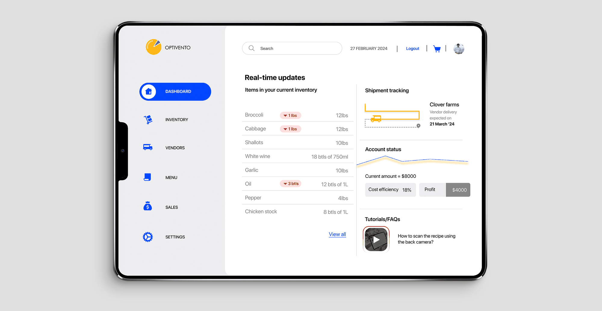
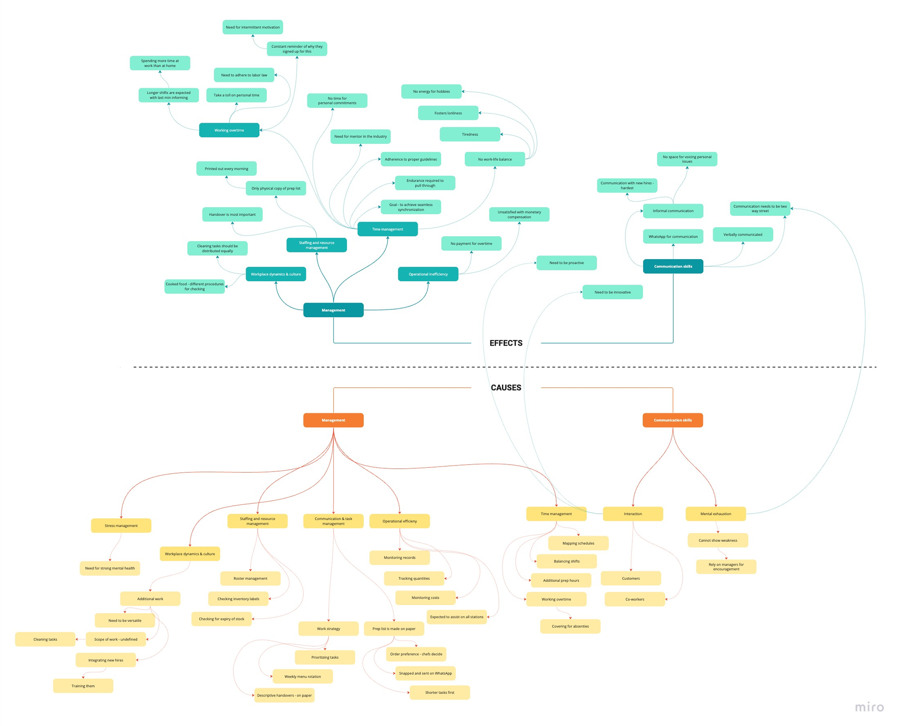
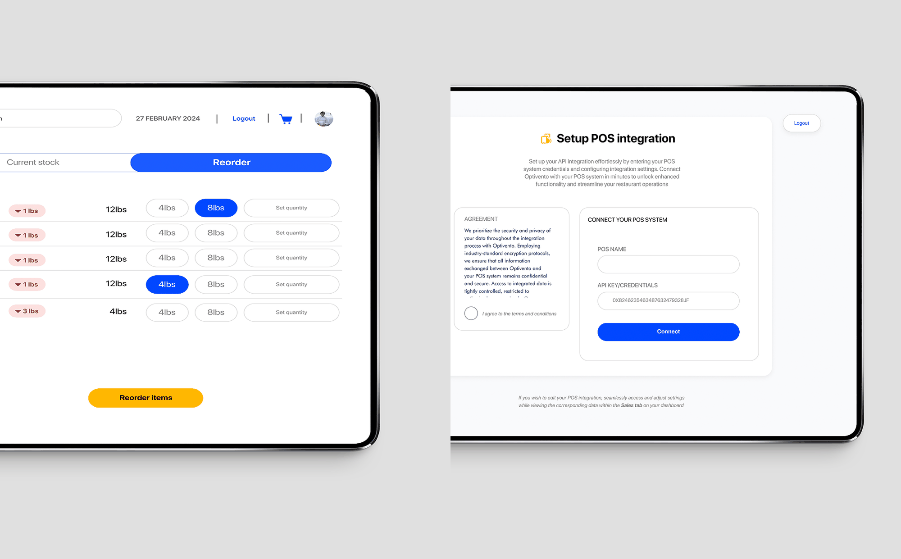
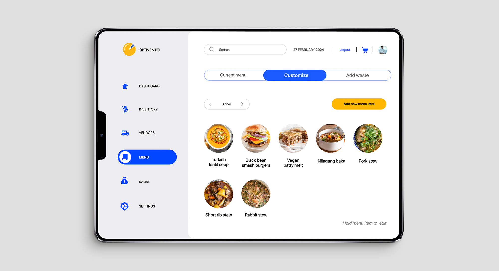
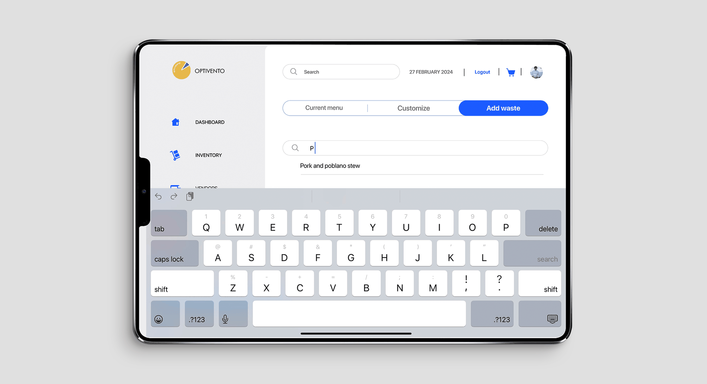
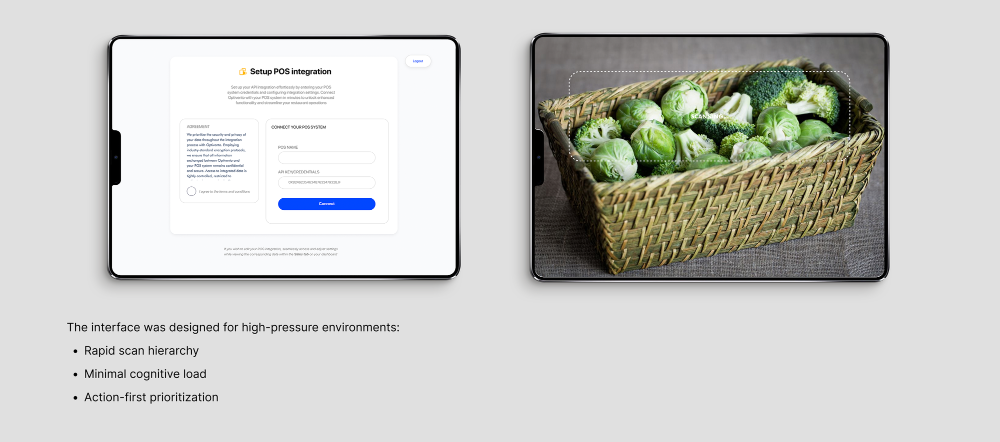

SUMEET GOKHALE
SUMEET GOKHALE

Overview
Optivento is an AI powered hospitality operations platform designed to simplify inventory, pricing, and kitchen decision making for restaurants and multi location food businesses. The system transforms fragmented operational data into actionable workflows that improve efficiency, reduce waste, and support faster business decisions.
Problem
Restaurant operations often rely on disconnected tools, manual tracking, and reactive decision making, creating inefficiencies across inventory, costing, and sales management. Teams struggled to translate operational data into clear actions, leading to wasted resources, inconsistent pricing, and reduced visibility into business performance.
Finding the core of the problem
I focused on operational efficiency as a key area for problem-solving and innovation. By delving into the intricacies of restaurant operations and the challenges experienced by chefs in managing inventory and recipes, I identified operational inefficiencies as a critical problem space.

Small cost reductions, massive profit impact
The challenge of non-labor costs in the restaurant industry is underscored by the significant impact on financial performance. A mere 2% reduction in these costs can lead to a remarkable 29% increase in profit for a restaurant with $1 million in sales and a 3.5% profit margin, translating to an additional $20,000 to the bottom line.
User interviews
We conducted in-depth interviews with 12 chefs from diverse culinary backgrounds and restaurant settings. These user interviews were structured to uncover pain points, workflows, and specific challenges faced by chefs when managing inventory and recipes.
“There is a need for a structure. I think this place will benefit more from an organizational structure.”
“The process involves assessing the day's schedule and agenda, need for efficient organization and preparation. Whether it's a special event, a busy lunch rush, or a regular workday, this initial planning phase is crucial to ensure that everything runs smoothly and effectively.”
Solving the problem
The foundation supports
- AI forecasting
- Predictive waste modeling
- Computer vision inventory validation
Core design principles
- Modular data mapping across inventory, pricing, and sales
- Real-time cost propagation through recipe engines
- Feedback loops that convert data into intervention
Data → Insight → Action → Margin Protection
Positive impact
- 8–12% reduction in food waste
- 15–20% improvement in inventory accuracy
- ~30% reduction in manual logging time
- Increased responsiveness to ingredient price fluctuations

Easy POS integration · Auto-listing for reorder

Customize menu

Comprehensive sales reporting
Technological dependencies
Technological dependencies form the backbone of Optivento, ensuring its seamless operation and delivery of essential features. By leveraging these technological dependencies, Optivento aims to provide a reliable, secure, and user-friendly solution for inventory management and restaurant operations.
| Feature | Dependencies |
|---|---|
| Current cost display | Backend server for fetching and processing real-time cost data. |
| Sign up | Backend server for user authentication and database storage. |
| Push notifications | Integration with push notification services such as Firebase Cloud Messaging or Apple Push Notification Service. |
| Search | Backend server for handling search queries and database indexing. |
| Location services | Access to device GPS or Wi-Fi for location detection. |
| Back camera | Access to device camera for scanning barcodes or capturing images. |
| Payment gateway | Integration with third-party payment processors such as RazorPay or PayPal. |
| Inventory lifecycle tracking | Backend server for storing and updating inventory data, potentially utilizing database management systems like MySQL or MongoDB. |
| Real-time data insights | Integration with data analytics platforms or frameworks like Apache Kafka for real-time data processing. |
| Alerts | Backend server for triggering and sending alerts based on predefined conditions. |
| POS integration | Integration with point-of-sale systems via APIs or SDKs provided by POS vendors. |
| Financial analysis | Integration with financial analysis tools or APIs for data aggregation and analysis. |
| Recommendations | Backend server for generating personalized recommendations based on user data and preferences. |
| Integration with food apps | Integration with APIs provided by food delivery or restaurant management platforms for data exchange and synchronization. |

Solution outcome
Optivento transformed fragmented restaurant operations into a connected decision-making system by centralizing inventory, pricing, and cost tracking into one streamlined workflow. The platform reduced operational blind spots, improved financial visibility, and enabled restaurants to make faster, data-backed decisions that directly impacted profitability and efficiency.